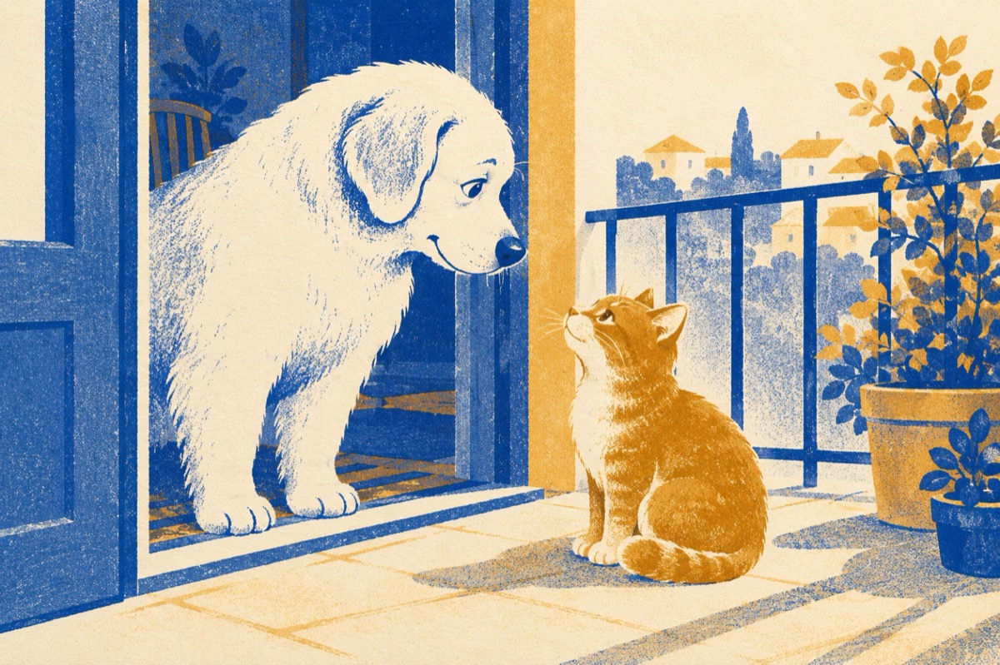

Toto și pisicel
Povestea este inversată
Nu mai e cum o știam odată
Cu Grivei în bătătură
Iar pisica-n casă la căldură
Nicăieri n-o să găsești
Obicei ca la Bichești
Albul nostru dolofan
Colo-n balcon la Dodan.
Ce pe nume-l strigă Toto
Și-a pus la pisică botu
Și nu o mai lasă-n casă
Chiar de miaună, nu-i pasă.
Pisicel stă și-l privește
Și în sinea lui gândește
Toto, ce prostuț băiat
Lumea astăzi s-a schimbat!
Nu mai e ca altădată
Pisica și cu cățelul stau în casă laolaltă
Toto, asta e democrație
Cin' nu știe, tre să știe!
Vasile Groza